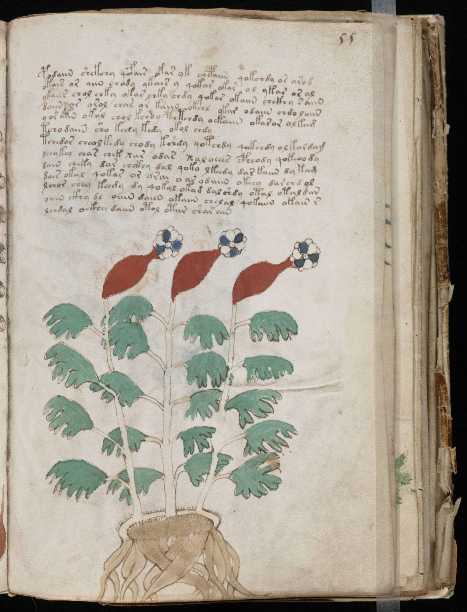

f55r
1podaiin shekchy qofair okar yk chcpaiin qokchdy or arod2okair or aiin chody ykair y qokar okar ol ykar or al3ykaiir chol chky okar chky chdy qokar okaiin chckhy saiin4daiin or orol chas or kaiin okchd ykar odaiin chdolaiin5y or aiin okal chol kchoy pchtchdy oekaiin okasor olkam6tcho daiin sho kedy kedy okol chdy7tchedor cheolkedy chody kshdy qotchdy qokchdy olkardam8dchykey char chek xar odar xaloeees cpheody qokeeo dy9dain cheky das chckhy dal qoko lkeedy dar kaiin dy kam10dair okal qokar or orai o as odaiin okeey dar chd ol11lchor chey keedy dy qokal okad dal shdy otal otaldiin12oain ckhy dl oiiin daiin okaiin chelal qokaiin okain r13lchdal ockhy daiin otol otar shar ain
